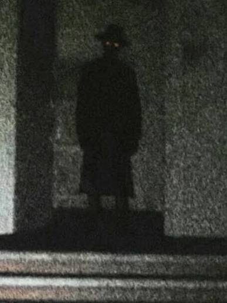
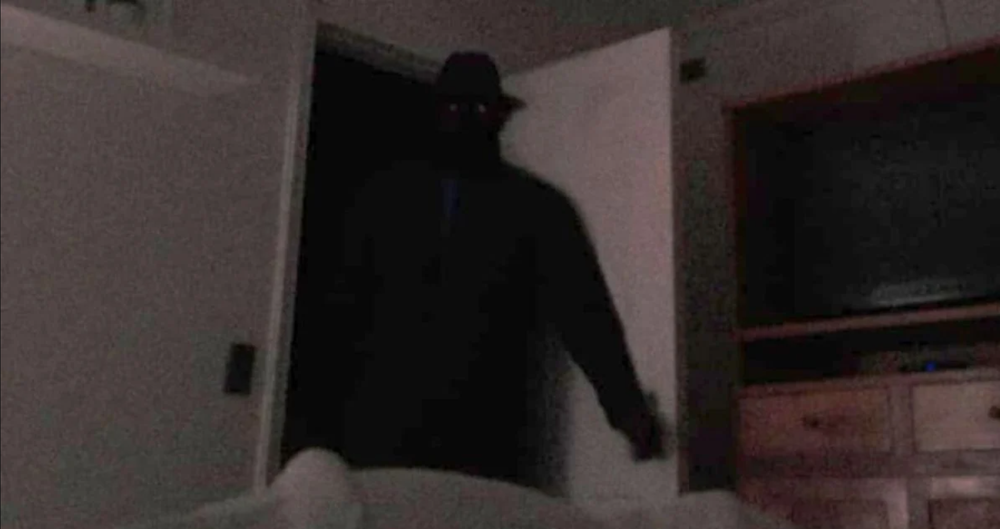

| Welcome Page | Poltergeists |
| Jersey Devil | The Hat Man |
The Hat Man is believed to be a spirit/shadow person who often appears to people when they have sleep paralysis. He is also described to be some sort of "sleep paralysis demon", but whether he is a demon or not is up for debate. There have been many reports across the country of a tall, dark silhouette standing in the room. His face has never been seen but his silhouette is quite infamous.

"The first time I saw The Hatman I was around 5 years old, and I kept seeing him until I was like 23. The Hatman I saw had a pretty odd face, it looked like a mannequin, and the times he opened his eyelids, he had no eyes, just black pitch eye sockets with some sort of red dot in the center."
—Anonymous, Reddit

"Children especially describe the Hat Man as a figure who appears during moments when they are vulnerable: sickness, grief, stress in the home, or the strange liminal states between sleep and waking. And that brings us to a question that haunts this legend: Is the Hat Man an entity or an experience?"
Bee Williams, TraditionalLegends.com